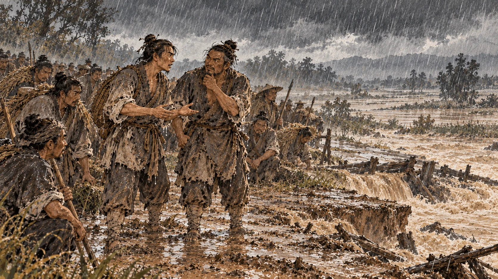
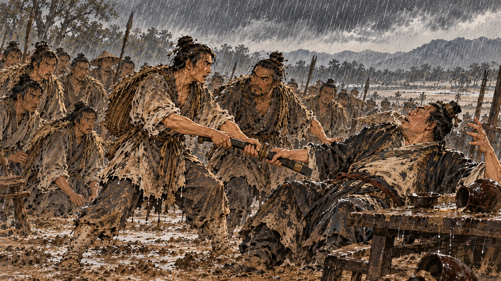
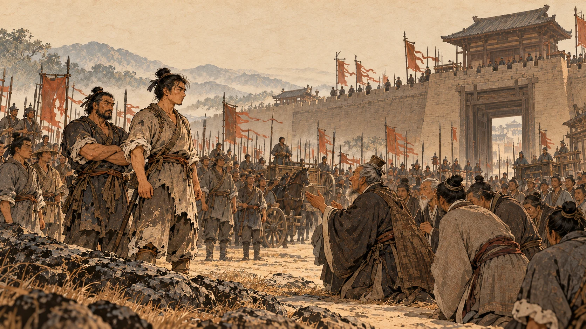

大泽乡：九百人误了期
一、两个被点名的人
先说名字。
陈胜，阳城人，字涉。吴广，阳夏人，字叔。这两人后来的称呼不太统一——史书有时叫他陈胜，有时叫他陈涉。同一个人，别当成两个。①
他们本来都算不上人物。
陈胜年轻时给人当雇工，替人种地。有一天在田埂上歇着，他忽然说了一句：苟富贵，无相忘。
哪天谁发达了，别忘了大家。
一起干活的人笑了：你一个扛活的，发达个什么？
陈胜叹了口气，回了一句很有名的话：嗟乎，燕雀安知鸿鹄之志哉！
麻雀哪知道大雁想飞多远。②
这句话被引用了两千年。但你注意一下当时的处境：说这话的人正在田里干活，连下一顿在哪儿都不知道。他不是在发愿，他是被人笑完之后，给自己找了个台阶。
不过十年之后，这句话会变成真的。原因不是他志向大，是时代给了他一次机会。
二、一场大雨

二世元年七月，秦朝征发了一批人去渔阳戍边。
按规矩，征的是“闾左”——住在里门左边的人家。秦朝的户口编制里，右边住的是有钱有势的，左边住的是贫弱的。这个细节很重要：从一开始，这批人就是按“最没关系的那一档”挑出来的。③
一共九百人，走到大泽乡停下。
陈胜、吴广都在这九百人里，都当了屯长——一个管五十人的小头目。④
然后下起了大雨。
雨大到路断了，走不了。他们自己一算：照这个天，肯定赶不上规定日期了。
而秦朝的法是：失期，法皆斩。⑤
这里要停一下。很多人把这句话理解成“秦朝不人道”——这话不算错，但更准确的是：它把九百个人同时推到了同一个位置上：往前走是死，站着不动也是死。
于是这两个屯长在雨里商量了一件事。
陈胜说：今亡亦死，举大计亦死，等死，死国可乎？
跑也是死，造反也是死，既然都是死，不如为一件大事死。⑥
这是中国历史上最著名的一次成本核算。它之所以成立，是因为那笔账的两边都是“死”——当两个选项的代价一样重的时候，人就会选那个听起来更大的。
三、两个名字
决定要造反，第一件事是打什么旗。
陈胜的分析是这样的：
他说，天下苦秦久矣。然后点了两个名字。
第一个，扶苏。
扶苏是秦始皇的长子。按规矩他该继位，但他因为几次劝谏，被派到外面带兵。后来听说他没罪，被二世杀了。而老百姓大多听说过他贤，却不知道他已经死了。⑦
第二个，项燕。
项燕是楚国的名将，跟秦军打过不少仗，立过功，对士兵好，楚国人怀念他。至于他的下落，“或以为死，或以为亡”——有人说他死了，有人说他逃了。⑧
陈胜的结论是：今诚以吾众诈自称公子扶苏、项燕，为天下唱，宜多应者。
我们这九百人，冒称扶苏和项燕的队伍，向天下起个头，响应的人应该不少。
这一段值得多看两眼。扶苏是秦国的公子，项燕是楚国的将军，两个不同国家、不同阵营的人，被陈胜摆在了同一面旗上。他的理由不是立场，是号召力：一个代表秦国人心里那个本该当皇帝的人，一个代表楚国人心里那个没死透的名将。
而他自己呢？他谁的旗都不举，他举别人的。
吴广听完，说：行。
四、装神弄鬼
但在举旗之前，他们先做了一件事：算卦。
卜的人看懂了他们的心思，说：你们的事都能成，有功劳。不过——你们问过鬼吗？
两人一听就明白了，说：这是教我们先立威。⑨
接下来是两出戏。
第一出：用朱砂在一块帛上写“陈胜王”三个字，塞进一条鱼肚子里。士兵买鱼回来煮，剖开鱼肚，看见了那块帛。
第二出：吴广半夜跑到驻地旁边的小树林里，点上火，学狐狸叫，叫的是“大楚兴，陈胜王”。
那晚士兵们全被吓着了。第二天，队伍里到处在议论，所有人的眼睛都看着陈胜。⑩
这两招今天看很土：鱼肚子里塞字条，学狐狸叫。但你要知道他们的处境——九百个人，没有广播没有网络，要让所有人同时相信一件事，靠的只能是这个。
而且我不用揭穿它，《史记》自己就把底交了：这两个人当场就说“这是教我们先立威”。所以这不是神迹，是他们自己动手做的第一件工程。
五、动手

真正打死结的地方，在吴广身上。
史书给了吴广一句评语：素爱人，士卒多为用者。他在士兵里人缘好，很多人愿意替他出力。⑪
这一条后来要了他的命，但现在先帮了他。
带队的将尉喝醉了。吴广故意在他面前反复说要逃跑——一遍一遍地说，把他激怒，让他当众打自己。
将尉果然动手，抽了吴广。
吴广要的就是这一下：让九百个人都看见，秦朝的官是怎么打人的。
将尉拔剑，吴广跳起来夺过来，把他杀了。陈胜从旁帮忙，两人一起杀了两个将尉。⑫
然后陈胜对着九百个人说了一段话：
公等遇雨，皆已失期，失期当斩。藉弟令毋斩，而戍死者固十六七。且壮士不死即已，死即举大名耳，王侯将相宁有种乎！
这段话前半截是在算账：我们已经误了期，误期要斩；就算不斩，去戍边的人十个里也死六七个。
后半截才是重点——王侯将相宁有种乎！
那些王侯将相，难道是天生就该当王侯将相的吗？
这句话是整件事里最要紧的一句。前面所有的东西——大雨、误期、鱼肚子里的帛、狐狸叫——都只是把他推到这个位置上。这一句是说给九百个穷人听的：你们这辈子之所以是穷人，不是因为你们生来就该是穷人。
九百个人齐声回答：敬受命。
六、一路到陈

他们袒露右臂，称“大楚”，堆起土坛立誓，把那两个将尉的头摆在坛上祭了。陈胜自立为将军，吴广做都尉。
然后开始打。
先打大泽乡，收编了人，再打蕲。蕲拿下来了。接着铚、酂、苦、柘、谯，一路打下去，全下来了。
《史记》在这里用了三个字：行收兵。
一边走，一边收人。队伍是滚起来的。
走到陈的时候，他们的家当是：战车六七百乘，骑兵一千多，步兵几万人。⑬
从九百人到几万人，用了多久？史书没给具体月日。但陈胜从称王到死一共六个月，所以这段扩张是以月算的，不是以年算的。
拿下陈之后，陈胜召集当地的三老和豪杰来议事。那些人说：将军您亲自披甲执锐，讨伐无道，诛灭暴秦，重新立起楚国的社稷，这功劳该称王。
于是陈涉称王，国号“张楚”。
“张楚”两个字的意思是：把楚国张大。
注意，他打的旗号始终是楚，不是陈。他要的是楚国的名分——这一点很关键，因为后面所有的麻烦，都跟这个“名分”有关。
七、六个月
在讲陈胜怎么死之前，先看看他的六个月里，天下发生了什么。
《史记》给了七个字：当此时，诸郡县苦秦吏者，皆刑其长吏，杀之以应陈涉。
各个郡县里受够了秦朝官吏的人，把秦朝派来的长官抓起来杀掉，响应陈胜。这句话就是第一章那件事的来路——沛县很快也会加入进来。
然后是六国的旧贵族全冒出来了。陈胜派出去打地盘的人，一个接一个自己称王：武臣在赵地自立为赵王，韩广在燕地自立为燕王，田儋在齐地自立为齐王。陈胜成了天下第一面旗，也成了天下第一个被绕过的人。
再看他自己这边。
他派周文往西打，一路收人，收到几十万，打到戏——那地方离咸阳已经很近了。秦朝慌了，把骊山的刑徒和人奴生的儿子全都放出来，交给少府章邯带着去打。周文的几十万人被打散，他自杀。⑭
接着是内部。田臧等人怕吴广不听指挥，假传陈胜的命令把吴广杀了，把头送到陈胜那儿。陈胜不但没追究，还给田臧封了官、授了印，让他当上将军。⑮
十二月，陈胜退到下城父，他的车夫庄贾把他杀了，投降秦军。⑯
杀吴广的是自己人，杀陈胜的是给他驾车的人。
但这还不是全部。陈胜称王以后，当年那个一起给人扛活的老乡找上门来了，敲着宫门说：我要见陈涉。
守门的人要把他绑起来。他反复解释，才被放开，可没人肯替他通报。后来陈胜出门，他在路上喊。陈胜听见了，召见他，带他一起坐车回宫。
老乡进了宫，看见殿屋帷帐，脱口而出：伙颐！涉之为王沉沉者！
嚯，陈涉当王，排场真大。⑰
这句楚地方言后来成了典故，“伙涉为王”就是这么来的。但这老乡后来越说越随便，把陈胜从前种地的事都拿出来讲。有人对陈胜说：这客人愚昧无知，胡说八道，会损你的威信。陈胜把他杀了。
从那天起，陈胜的老朋友一个个都离开了他。《史记》的评语是六个字：由是无亲陈王者。
陈胜只当了六个月王。他不是被秦朝打败的，他是被自己拆掉的。
可《史记》最后给他的评语，分量比谁都重。
陈胜虽已死，其所置遣侯王将相竟亡秦，由涉首事也。
他死了。但他派出去的那些人，最后把秦灭了。起这个头的人，是他。刘邦称帝以后，专门在砀地给陈胜留了三十户人家守墓，一直祭祀。⑱
陈胜在大泽乡动手的消息，几个月内传遍天下。沛县那个躲在芒砀山上的逃犯，等的就是这个。
下一章：沛县的难题——谁来做首领。